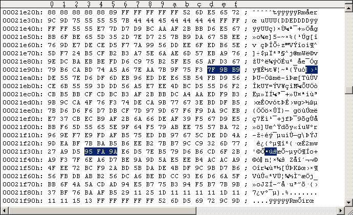
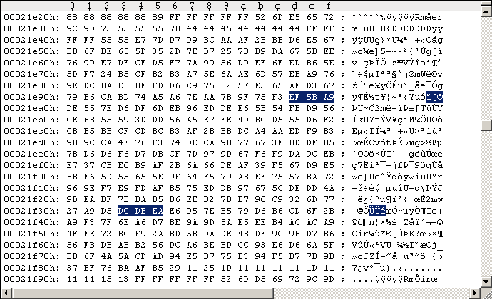

Main Index PatchesRapidLok2 patches: Disable all protection checks
The patches here are recommended for WinVice gameplay and remastering without a drive speed control: Apply these patches to each protected G64 file (disk side) and forget about the protection, everything is disabled (except the "12th header byte" off-byte check in the $0300 routine, but this should not be a problem). We start here with a short cut in the $0417 routine that directly calls the $052F file transfer management ($0446-JSR). This bypasses the initial track 19 RL2 header integrity check & alignment, the track alignment for tracks 20-29, the track 36 handler, the key checks for tracks 29-33, the track 36 key sector length check, and the overwriting of [$04B4-$052F], [$0781-$07FC]. See the following code snippets for the patch: --- ORIGINAL CODE #1 --------------------------- 042B: A5 D6 LDA $D6 ; Start track of file to find & load (encrypted) 042D: 29 3F AND #$3F ; $3F=0011.1111b 042F: 85 C2 STA $C2 ; [$C2]:= [$D6] and 0011.1111b, Start/working/end Track of file to load & transfer 0431: A9 0A LDA #$0A ; $0A=0000.1010b 0433: 8D 00 19 STA $1900 ; CLK=DATA=1/lo 0436: A9 05 LDA #$05 0438: 85 BF STA $BF ; [$BF]:=5, Loop variable: #7Bs for Tracks 29..33 043A: A9 75 LDA #$75 043C: 85 58 STA $58 ; [$58]:=$75 ($75 data sector header to be located) 043E: A9 ED LDA #$ED 0440: 85 53 STA $53 ; [$53]:=$ED ($75 data sector header to be located) 0442: A9 D6 LDA #$D6 0444: 85 54 STA $54 ; [$54]:=$D6 ($75 data sector header to be located) 0446: 20 B9 04 JSR $04B9 ; Integrity checks, read Track 36 Key Sector, run file transfer management ------------------------------------------------ --- PATCHED CODE #1 ---------------------------- 0446: 20 3A 05 JSR $053A ; Run file transfer management ------------------------------------------------ The $0446 code is obviously located in the $04xx buffer which gets read into memory by the $0300-B routine: Job #1, Track 18 Sector 9. This is a problem as the $0300-B routine uses the 3rd and 4th bytes from the final GCR sequence of the sector (sector parity) for decrypting [$039C-$07FF] ($0344-LDA, $034B-LDA). We have to make sure the original sector parity remains the same. We bypass the $04B9 routine with the above patch, hence we can turn the $04BF-BCS into a $04BF-BIT correcting the sector parity with its argument: --- ORIGINAL CODE #2 --------------------------- 04B9: 20 E6 06 JSR $06E6 ; Move head to Track 19 (from Track 18), set Bit rate and init [$55]/[$59]. 04BC: 20 75 04 JSR $0475 ; Check RL track header integrity, set/use [$C5]:=$32, CF:=1 if something goes wrong. 04BF: B0 F6 BCS $04B7 ; branch if error. Avoid this branch!!! ------------------------------------------------ --- PATCHED CODE #2 ---------------------------- 04BF: 24 E0 BIT $E0 ; fix sector checksum / final GCR sequence ------------------------------------------------ The calculation is as follows. The 4 bytes we change ($0447/$0448/$04BF/$04C0) have the following "parity" (the decrypted bytes are used for this here): original: $B9 xor $04 xor $B0 xor $F6 = $FB patched: $3A xor $05 xor $24 xor $.. = $1B Hence $FB xor $1B = $E0 is to be used for correcting the sector parity. Note on bypassing code: I could not find any dependencies on values of variables that were initialized or used by the bypassed code. Note on RapidLok address restrictions: There is no problem with the above patch addresses. As all RapidLok routines are encrypted on disk we have to encrypt all our patches before we apply them to the G64 images. The $0300-B routine decrypts the RapidLok code routines [$039C-$07FF]. Setting a memory breakpoint into the decryption loop (e.g.w 8:0446) reveals the original encrypted bytes, the bytes they get decrypted (xor'ed) with, and the decrypted plain code bytes: --- ORIGINAL DECRYPTION --------------------- 0446 = |53 5E CB| xor |73 E7 CF| = |20 B9 04| 04BF = |27 D8| xor |97 2E| = |B0 F6| --------------------------------------------- --- MANIPULATED DECRYPTION ------------------ 0446 = |53 DD CA| xor |73 E7 CF| = |20 3A 05| 04BF = |B3 CE| xor |97 2E| = |24 E0| --------------------------------------------- The $0446/$04BF code is obviously located in the $04xx buffer which gets read into memory by the $0300-B routine: Job #1, Track 18 Sector 9. Applying the patches to the G64 images I always use the Maverick v5.04 GCR Editor (in WinVice) to "edit" the G64 images. Please refer to the RL6 handbook for instructions. Never save your modifications to disk/G64 from within the GCR Editor! Use "UltraEdit" in hex-mode instead to apply the changes directly to the G64 images (GCR code). The following Figure #1 shows the original Track 18 Sector 9 of a RapidLok2 G64 image, Figure #2 shows the modifications. Note: Your file offsets are usually different.
Figure #1: Original Track 18 Sector 9 of a RapidLok2 G64 image (PAL).
Figure #2: Patched Track 18 Sector 9 ($0446/$04BF patches).The patches here allow the removal of all $7B extra sectors and all $55 empty sectors from RapidLok protected disks (including their preceding sync marks). Only the $52 DOS reference header on each RapidLok formatted track, the RapidLok $75 sector headers, $6B data sectors and the DOS format sectors ($52 headers and $55 data sectors) are required now. All sync marks can be set to standard 5 bytes length.